Publication
2022
-
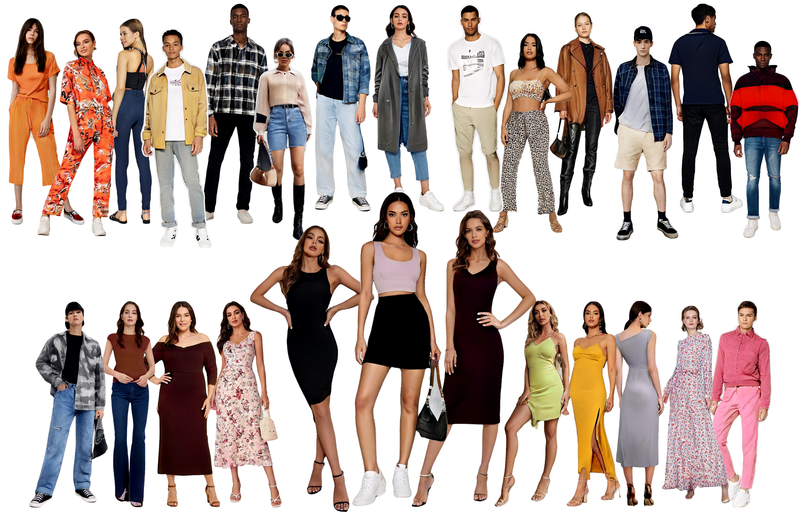 StyleGAN-Human: A Data-Centric Odyssey of Human GenerationTechnical report, arXiv:2205.15996, 2022 -
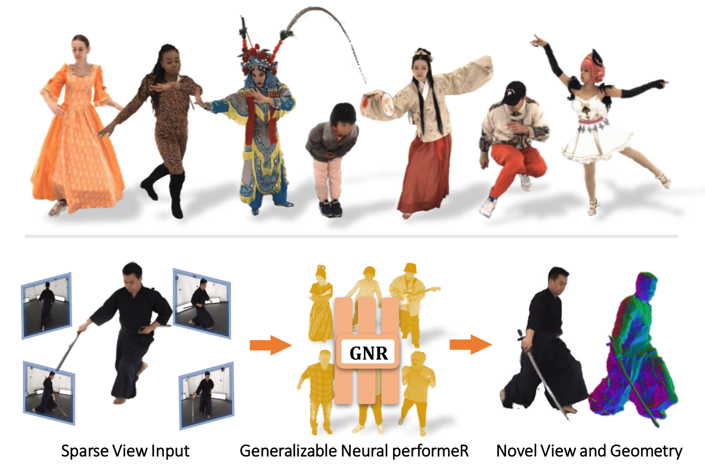 Generalizable Neural Performer: Learning Robust Radiance Fields for Human Novel View SynthesisTechnical report, arXiv:2204.11798, 2022 -
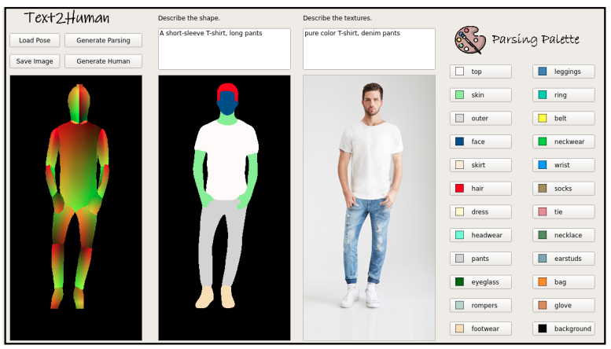 Text2Human: Text-Driven Controllable Human Image GenerationACM Transaction on Graphics (SIGGRAPH), 2022 -
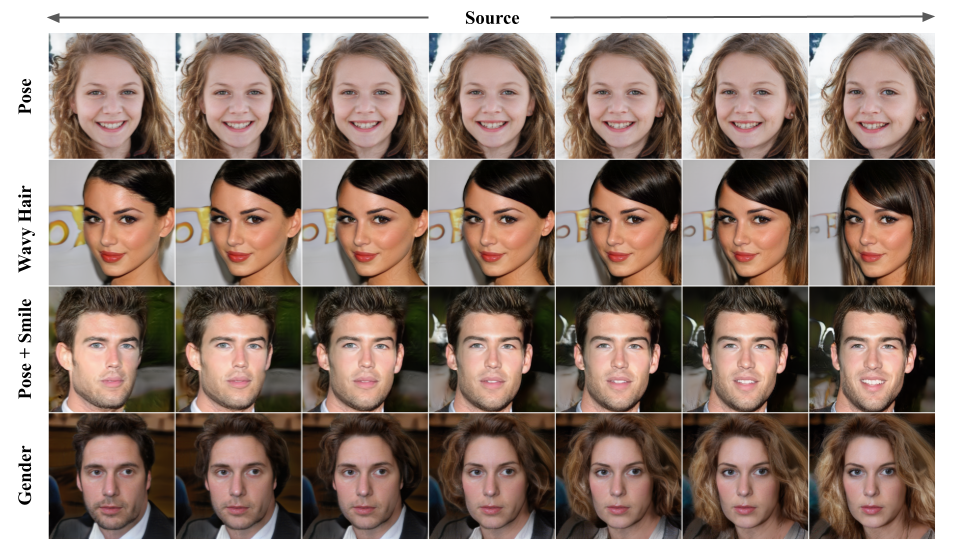 TransEditor: Transformer-Based Dual-Space GAN for Highly Controllable Facial EditingConference on Computer Vision and Pattern Recognition (CVPR), 2022 -
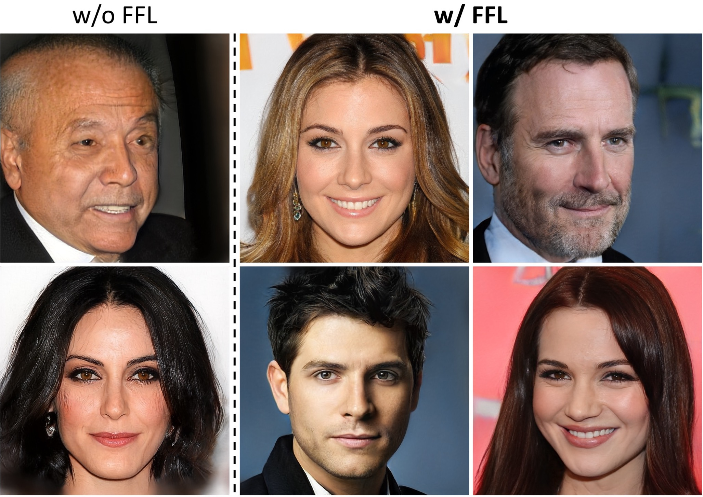 Focal Frequency Loss for Image Reconstruction and SynthesisInternational Conference on Computer Vision (ICCV), 2022
2021
-
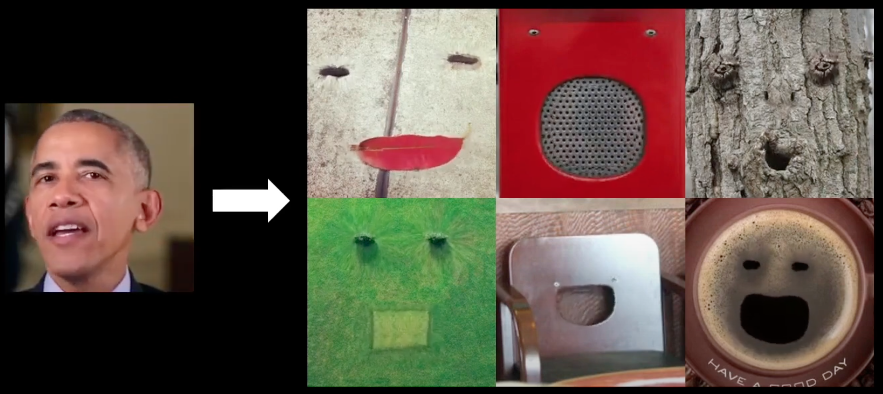 Everything’s Talkin’: Pareidolia Face ReenactmentConference on Computer Vision and Pattern Recognition (CVPR) 2021 -
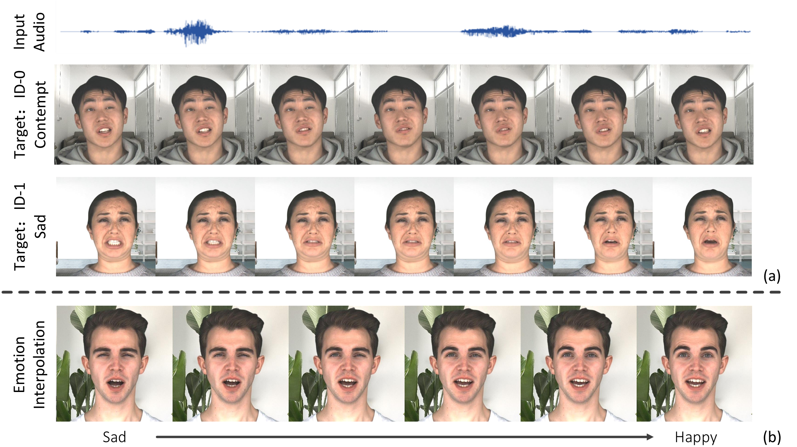 Audio-Driven Emotional Video PortraitsConference on Computer Vision and Pattern Recognition (CVPR) 2021
2020
-
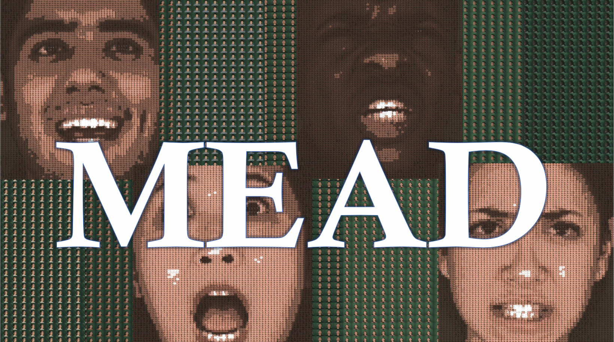 MEAD: A Large-Scale Audio-Visual Dataset for Emotional Talking-Face GenerationEuropean Conference on Computer Vision (ECCV) 2020 -
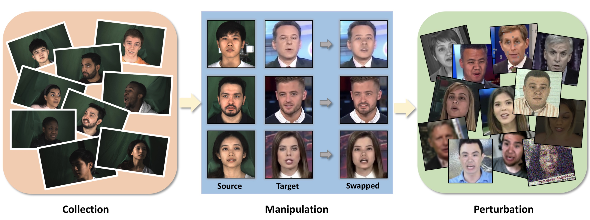 DeeperForensics-1.0: A Large-Scale Dataset for Real-World Face Forgery DetectionConference on Computer Vision and Pattern Recognition (CVPR) 2020 -
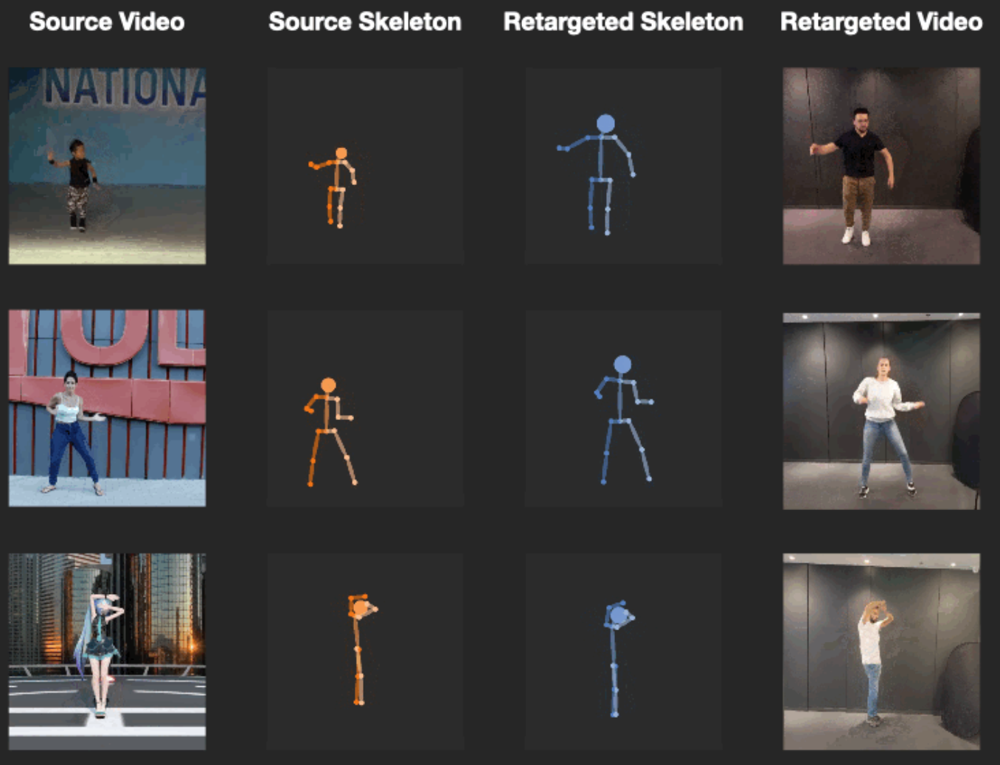 TransMoMo: Invariance-Driven Unsupervised Video Motion RetargetingConference on Computer Vision and Pattern Recognition (CVPR) 2020
2019
-
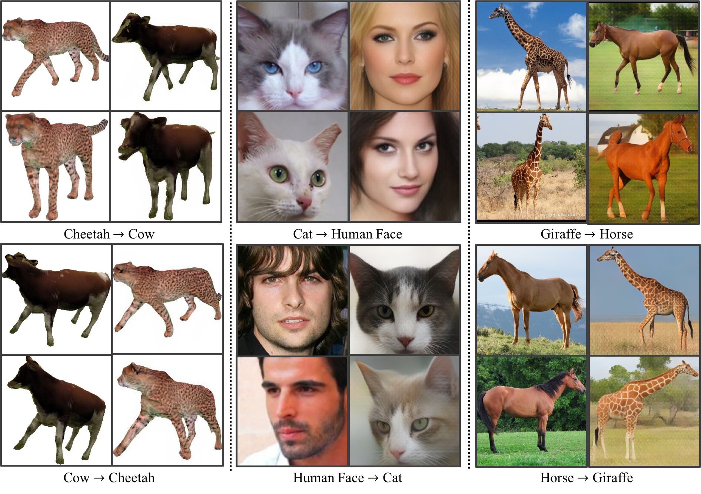 TransGaGa: Geometry-Aware Unsupervised Image-to-Image TranslationConference on Computer Vision and Pattern Recognition (CVPR) 2019
2018
-
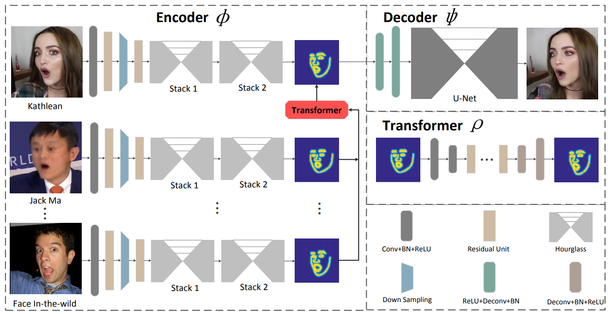 ReenactGAN: Learning to Reenact Faces via Boundary TransferEuropean Conference on Computer Vision (ECCV) 2018 -
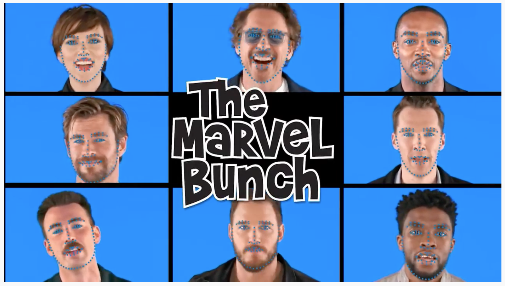 Look at Boundary: A Boundary-Aware Face Alignment AlgorithmConference on Computer Vision and Pattern Recognition (CVPR) 2018